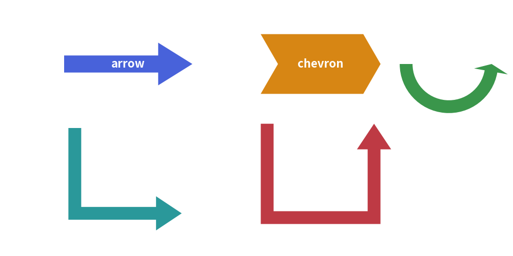

Block Arrows
In addition to line connectors (drawlib.lines), Drawlib provides six directed block arrow primitives in drawlib.shapes.
Block arrows are closed 2D polygons with customizable tail widths, arrowhead dimensions, and corner rounding. They are widely used for data pipelines, architectural flows, and process stages.
1. Overview of Block Arrow Functions

2. Straight Block Arrow (arrow)
Draws a directed block arrow between two arbitrary coordinates xy1 and xy2.
arrow(
xy1=(10, 20),
xy2=(60, 20),
tail_width=4,
head_width=10,
head_length=8,
head="->", # "->", "<-", or "<->"
style=Styles.primary_flat,
text="Data Ingestion",
textstyle=Styles.white_bold,
)
head: Supports single forward ("->"), backward ("<-"), or bidirectional ("<->") arrowheads.text: Automatically centers a label within the arrow shaft.
3. Process Chevron (chevron)
Draws an interlocking arrowhead-shaped block with an indented rear notch, ideal for sequential stage diagrams:
chevron(
xy=(50, 25),
width=30,
height=16,
corner_angle=60, # Tip acute angle
style=Styles.accent_flat,
text="Stage 1",
textstyle=Styles.white_bold,
)
[!TIP] For chained multi-stage chevron pipelines, consider using the high-level
ChevronProcesscomponent, which calculates automatic spacing and themes.
4. Orthogonal Routed Arrows
L-Shaped Corner Arrow (arrow_l)
Draws a 90-degree right-angled block arrow within a bounding box (width, height).
arrow_l(
xy=(40, 30),
width=30,
height=25,
tail_width=3,
head_width=8,
head_length=6,
r=4, # Corner rounding radius
style=Styles.secondary_flat,
)
U-Turn Feedback Arrow (arrow_u)
Draws a 180-degree turnaround block arrow, typically used for retry mechanisms or feedback loops.
arrow_u(
xy=(60, 30),
width=25,
height=30,
tail_width=3,
head_width=8,
head_length=6,
r=5,
style=Styles.danger_flat,
)
5. Circular & Multi-Point Arrows
Circular Arc Arrow (arrow_arc)
Draws an elliptical arc block arrow between angle_start and angle_end.
arrow_arc(
xy=(50, 50),
width=30,
height=30,
angle_start=180,
angle_end=0,
tail_width=3,
head_width=8,
style=Styles.success_flat,
)
Multi-Point Polyline Arrow (arrow_polyline)
Draws a complex routed block arrow passing through an arbitrary list of waypoint coordinates [(x1, y1), (x2, y2), ...].
arrow_polyline(
xys=[(10, 10), (40, 10), (40, 35), (70, 35)],
tail_width=3,
head_width=8,
head_length=6,
r=3,
style=Styles.primary_flat,
)